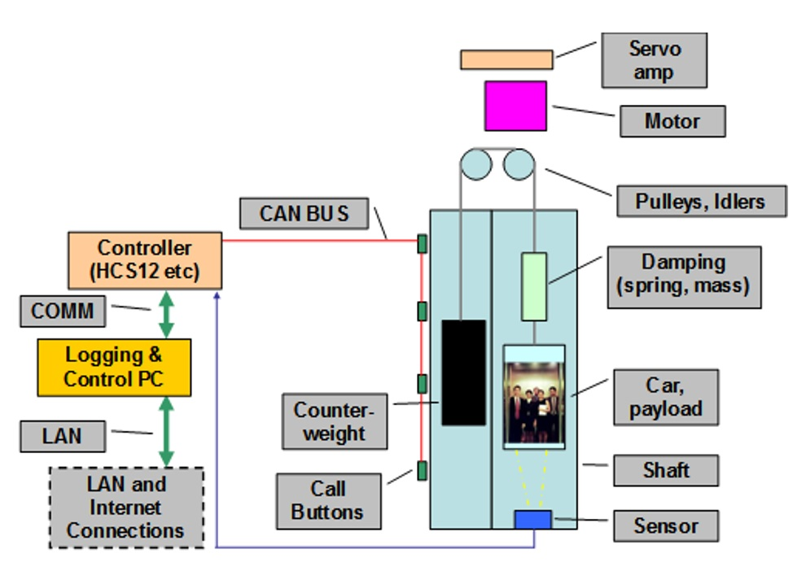

The goal for Engineering Project VI is to build and control an
elevator using various embedded controllers and establishing a CAN
bus communication environment. This system will feature a ToF sensor
for motor feedback and positio control (phase 2), CAN bus
communication between nodes to relay information and process calls.
Lastly, the elevator will be controllable from a network connection
(phase 2) and feature a database for logging movements and relevant
information.
Phase 1 focuses on the physical design and assembly of the elevator
platform as we are making our own for this project. It shall focus
on programming the embedded controllers to send/receive CAN messages
on the bus and implement processing at each node.
Phase 2
Phase 2 will expand the system into the world of LAN and for our
specific system, feature various new additions/redesigns. This will
allow the elevator to be controlled on a local network and allow for
data logging via MySQL.
Phase 3
Phase 3 will act as the final integration phase between the
hardware/embedded and software/network modules into a final,
completed, elevator system. Lastly, a final demonstration,
presentation, and report will be created to outline our successes,
challenges, and overall experiences.
Project Description
Elevator Control System
The overall project plan is to build a custom elevator platform in a
3D modeling software (SolidWorks), purchase necessary materials, and
assemble it. Then, program each microcontroller as needed for its
purpose with the Controller Area Network (CAN) acting as the
communication standard between nodes. As buttons are pressed at each
floor, the Elevator COntroller will direct the car in a safe and
controlled manner to its destination.
The system will use a ToF distance sensor to track the elevator car
position, allowing for the use of timeouts and constant feedbpack.
Buttons, status indicators (LEDs), displays (LCD), and controllers
will exchange information over the CAN bus.
Floor Controllers (STM32)
Each floor controller will consist of:
Purpose: sends a request to the supervisor controller for the car
to come the requested floor
An STM32F303RE and STM shield
Three buttons on each floor controller shield, but only the car
controller utilizes all three
Six LEDs to indicate the button user pressed (3 LEDs; used for
floor request) and 3 LEDs to provide the lcoation of the elevator
car at all times.
An LED for each floor selection button and three status LEDs to
show the floor the elevator is on
Door-open and door-close switch with an associated LED mounted
onto the casing of the switch
Elevator Controller (STM32 using Arduino Framework (PlatformIO))
The elevator controller will consist of:
Purpose: controls the general elevator movement logic (motor
driver + stepper control code) and sends the elevator position the
supervisor controller
An STM32F303RE with two-PCB custom stackup from a previous
semester
Used this PCB since it features a CAN transceiver, a stepper motor
driver, peripherals for limit switches, etc.
Supervisor Controller (Raspberry Pi 4)
The supervisor controller will include:
Purpose: host a local server to handle both physical (embedded
controller) requests and web requests (via this website!) and
handle the internal logic/handling
Features a Finite State Machine and associated logic to listen to
and dispatch commands between the various microcontrollers
Will later allow for the elevator to be controlled from this
website, and feature a MySQL database
Figure 1 - Phase 1
Embedded Elevator System
The first phase of this project demonstrates the design,
programming, and testing of this elevator system. Each
microcontroller will communicate with each other via CAN in phase 1,
and will allow for website-based commands to control the elevator in
later phases.

Figure 1 - Approximate schematic of the system. Actual
implementation may be different due to our system being a
custom-made one.
CAN Message Specification
Common Communication Standard
This elevator system, as per the project requirements, will establish
a common CAN messaging protcol. This allows for the various elevators
to be added to or communicate with another group's system without
requiring embedded software changes.
The minimal Phase 1 project is a CAN network consisting of the
controller, floor controllers, distance sensor, and LCD or 7-segment
display. Extra credit extensions may add additional functionality if
approved by the faculty team.
Figure 2 - Phase 2
Networked Elevator Monitoring
In Phase 2, the elevator controller will interface to a PC on a
Local Area Network (Elevator Network) and then to the Internet.
Elevator events will be logged into an SQL database which will store
and display diagnostics data.
Figure 2 - Approximate schematic of the system. Actual
implementation may be different due to our system being a
custom-made one.
Software Components
Monitoring and Diagnostics
SQL Database and Local Server: monitors and stores data from
controllers and CAN network.
Diagnostics display program: collects and displays
elevator data on the elevator module or another PC connected through
the LAN.
aaa
An aspect of elevator control, such as shutting the elevator down
completely or requesting the elevator from a web or phone interface,
may also be included.
Timeline
Milestones
This table summarizes the milestone dates for each phase. A complete
breakdown of detailed phase tasks can be found in the
Project Charter. Please note that it has been modified slightly due to our project
starting in Week 3 of the semester, hence some deadlines are
slightly extended.